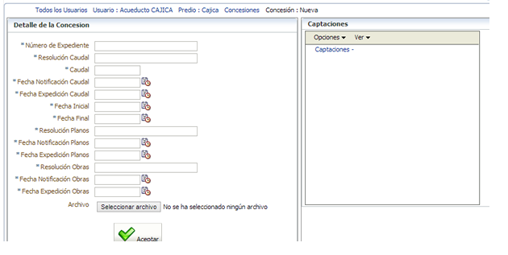

Registro de concesiones
Registro de concesiones
Crear una concesión
Una vez seleccionado el Usuario y predio de su interés, el sistema le presentará la opción para registrar la información de todos los actos admisnitrativos surtidos en el proceso de aprobación de una concesión.
Observe que en este formulario usted podrá adjuntar un documento PDF de un peso máximo 1Mb.

Descripción de los atributos:
- NÚMERO DEL EXPEDIENTE: Código alfanumérico establecido para identificar administrativamente la documentación necesaria para sustentar el permiso ambiental de recurso hídrico. Dicha codificación la establece la Autoridad Ambiental.
- NÚMERO DE LA RESOLUCIÓN POR MEDIO DE LA CUAL SE ASIGNA EL CAUDAL DE UNA CONCESIÓN DE AGUAS: Número del Acto administrativo por medio del cual se otorga la concesión de aguas asociada al usuario correspondiente. Dicho valor es numérico.
- CAUDAL CONSECIONADO: hace referencia a la proporción de agua destinada para abastecer los requerimientos de un predio o una población. Debe registrarse con un valor numérico en litros por segundo.
- FECHA DE EXPEDICIÓN DE LA CONCESIÓN DE AGUAS: Se establece la fecha en el formato día/mes/año en el cual se emite el acto administrativo donde se otorga la concesión de aguas asociada al usuario correspondiente.
- FECHA DE NOTIFICACIÓN: Se establece la fecha en el formato día/mes/año en el cual el usuario fue notificado del acto administrativo que otorga la concesión de aguas.
- VIGENCIA: Se establece la fecha inicial y final del periodo de tiempo durante el cual se otorga el permiso ambiental de recurso hídrico. La información debe registrarse en el formato día/mes/año.
- NÚMERO DE LA RESOLUCIÓN POR MEDIO DE LA CUAL SE APRUEBAN LOS PLANOS: Número del Acto administrativo por medio del cual se aprueban los planos para la construcción del sistema de captación concesionado para el aprovechamiento del recurso hídrico.
- FECHA DE EXPEDICIÓN DE LA RESOLUCIÓN POR MEDIO DE LA CUAL SE APRUEBAN LAS PLANOS: Se establece la fecha en el formato día/mes/año en el cual se emite el acto administrativo, donde se aprueban los planos para la construcción del sistema de captación concesionado para el aprovechamiento del recurso hídrico.
- NÚMERO DE LA RESOLUCIÓN POR MEDIO DE LA CUAL SE APRUEBAN LAS OBRAS: Número del Acto administrativo por medio del cual se aprueban las obras construidas del sistema de captación concesionado para el aprovechamiento del recurso hídrico.
- FECHA DE EXPEDICIÓN DE LA RESOLUCIÓN POR MEDIO DE LA CUAL SE APRUEBAN LAS OBRAS: Se establece la fecha en el formato día/mes/año en el cual se emite el acto administrativo, donde se aprueban las obras construidas del sistema de captación concesionado para el aprovechamiento del recurso hídrico.
- FECHA DE NOTIFICACIÓN: Se establece la fecha en el formato día/mes/año en el cual el usuario fue notificado del acto administrativo, donde se aprueban las obras construidas del sistema de captación concesionado para el aprovechamiento del recurso hídrico.